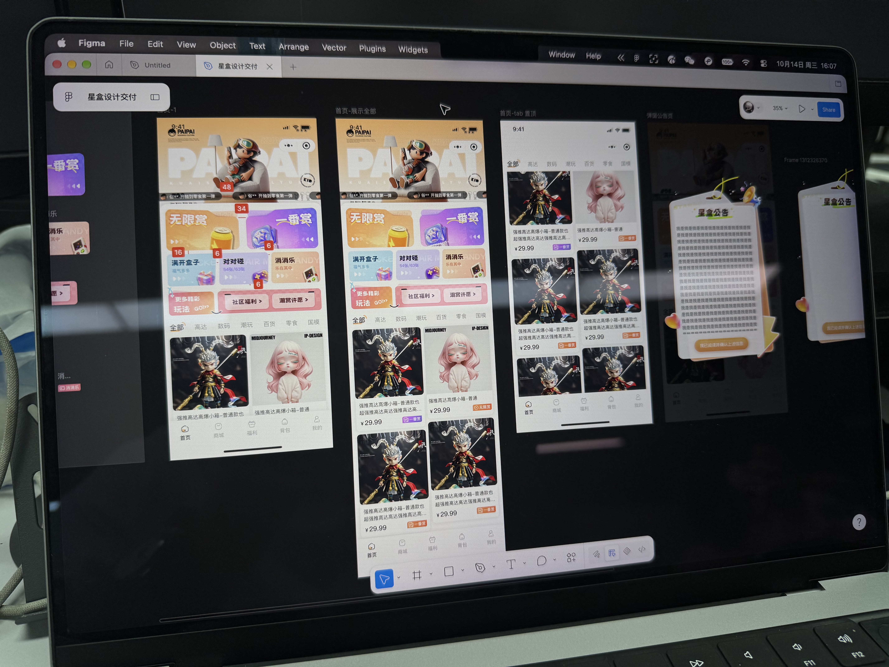
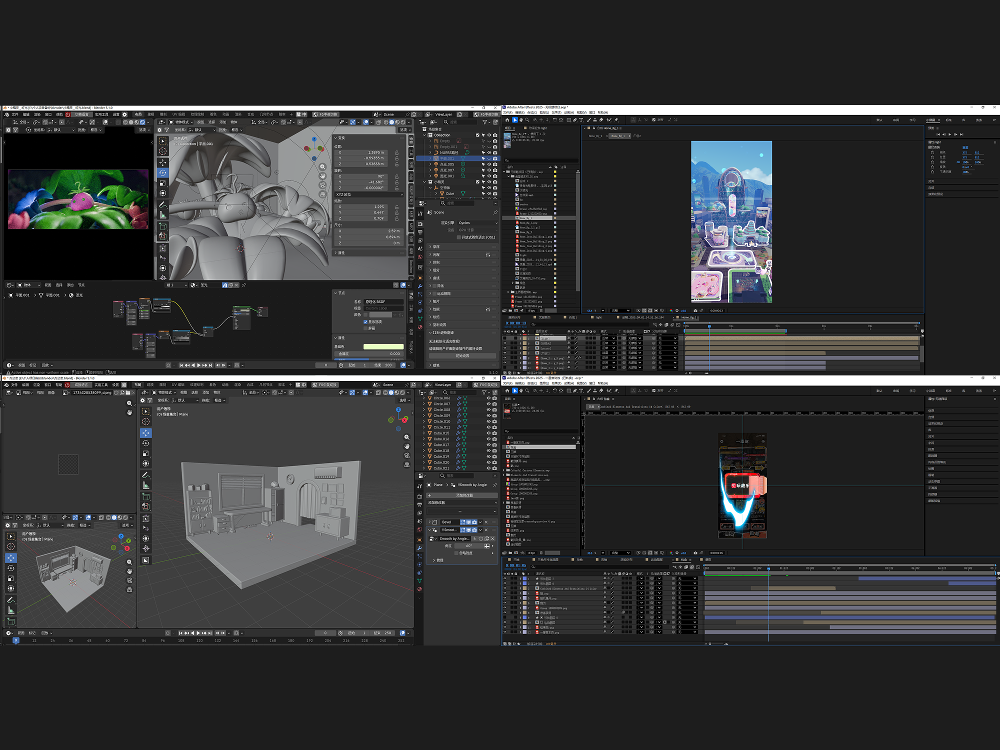
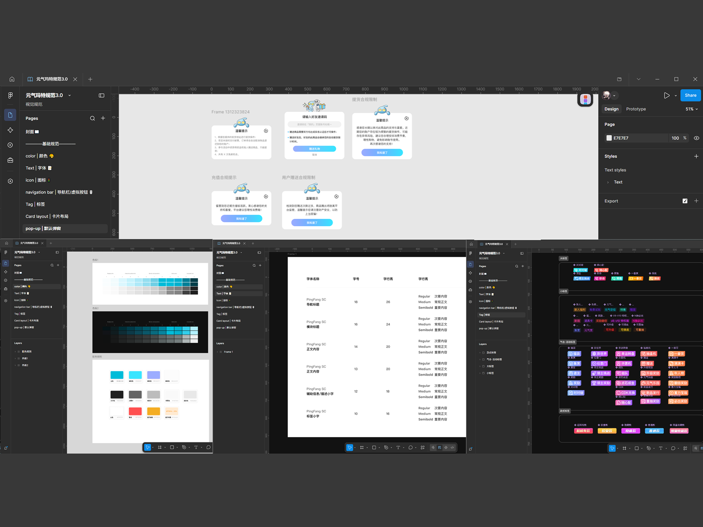
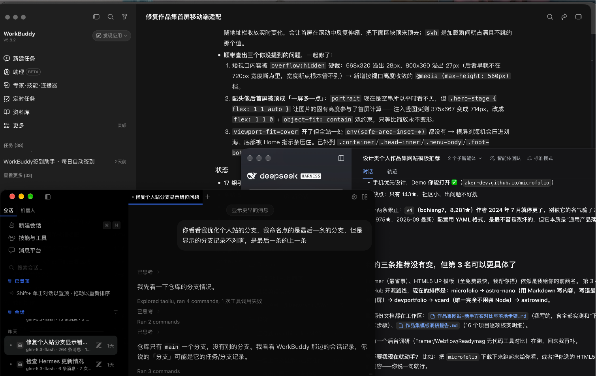

设计之外，我还能把它做出来。Beyond the design file - / I build it too
我是刘涛（Timon），在深圳做 UI/UX 五年多，设计从业七年。主线是 C 端产品的界面与体验：千万级 GMV 大促、核心交易链路、会员与权益体系都独立跟过。动效、插画、3D 我自己出，从视觉概念到上线稿一个人走完。I'm Liu Tao (Timon). I have over five years of UI/UX experience in Shenzhen and seven years in the design industry. My main focus is on the interfaces and user experience of consumer-facing products. I have independently led projects including large-scale promotion campaigns with GMV reaching tens of millions, core transaction workflows, and membership and benefit systems. I create motion graphics, illustrations and 3D assets by myself, handling the entire process from visual concepts to final deliverables ready for launch.
一直在探索Always exploring
新工具、新交互、新流程 —— 能提效的就值得试一遍，试完能留下的就沉淀成流程。New tools, new interactions, new workflows — if it saves time it is worth a try; if it holds up, it becomes a process.
我最在意一件事：用户第一次打开就会用。界面上每个决定背后都要有理由，讲不出理由的我就拿掉。The thing I care most about is that users can use it the first time they open it. Every decision made on the interface must have a rationale; I will remove anything that cannot be justified.
界面之外我还做动效、插画和 3D（AE / Illustrator / Blender）：动效负责把交互和节奏讲清楚，插画与建模负责让活动、IP 和产品视觉立得住。需要的时候这些我自己出，不用等外部资源排期。Beyond interfaces I work in motion, illustration and 3D: motion to make interactions and pacing legible, illustration and modelling to give campaigns, IP and product visuals their identity. When a project needs them, I make them myself instead of waiting on outside resources.
我做设计习惯先挖根因 —— 问题出在间距就改间距，出在缺规范就先补规范。交付里稿子只是其中一环，真正有用的是那套别人能接着用的规则。When I do design, I tend to dig into root causes first. If the problem lies in spacing, I adjust the spacing; if the issue comes from missing specifications, I establish them first. The design drafts are only part of the deliverables. What truly matters is the set of rules that others can continue to use.
现在我在找下一段能长期投入的机会：有真实用户量、设计能真正影响结果的产品。I am now looking for my next long-term opportunity: a product with genuine user volume, where design can truly impact outcomes.
我能带来什么What I bring
-
01
界面与体验设计Interface & Experience Design
C 端产品的界面与体验设计：从需求拆解、信息结构到上线稿，首页、交易链路、会员与权益体系都独立跟过。交付的是能复用的系统，不是单张好看的页面。Interface and experience design for consumer products: from brief and information structure to shipped screens — home page, funnel, membership and benefits, each carried end to end. What I hand over is a reusable system, not one good-looking page.

-
02
动效与视觉表达Motion & Visual Craft
动效（AE）、插画（Illustrator）、3D 建模（Blender）都能自己出：动效把交互和节奏讲清楚，插画与建模让活动、IP 和产品视觉立得住。不用为一张 KV 或一个动效等排期。Motion (After Effects), illustration (Illustrator) and 3D modelling (Blender), all made by me: motion to make interactions and pacing legible, illustration and modelling to give campaigns, IP and product visuals their identity. No waiting on outside resources for a key visual or an animation.

-
03
设计规范与流程Design Systems & Workflow
把界面收敛成一套规范 —— 颜色、字号、间距、圆角、组件状态都有来源；再把它接进 AI 流程：改稿、走查、多语言版本半自动化，设计稿到线上页逐项核对，一个页面 20 分钟内出报告。I fold interfaces into one set of standards — colour, type, spacing, radii, component states, every value with a reason — then wire it into an AI workflow: revisions, design QA and localised versions semi-automated, design file against shipped page checked item by item, a page in under 20 minutes.

-
04
AI 生图与 Vibe CodingAI Imaging & Vibe Coding
用 AI 补齐「做出来」这最后一步：生图出概念与物料，vibe coding 把想法做成能跑的产品。macOS 截图翻译工具 SnipShotBase、大模型 API 余额看板，还有你现在看的这个网站，都由我独立交付。设计稿之外，我自己就能把它变成真的。AI closes the last mile from design to something that runs: image generation for concepts and assets, vibe coding to turn ideas into working products. SnipShotBase, a macOS screenshot-translation app, an LLM API balance dashboard and the site you are reading were all delivered by me alone. Beyond the design file, I can make it real.
